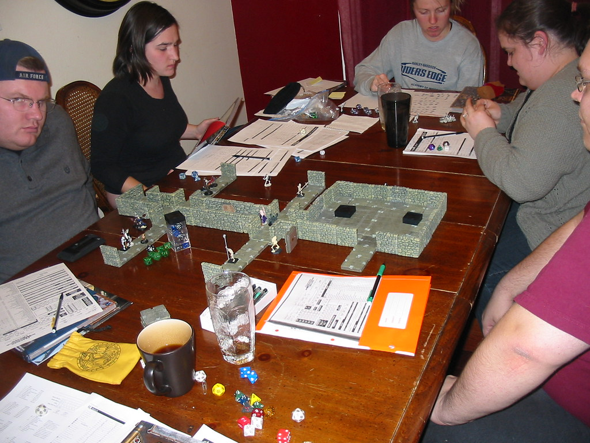

HOW TO FIND A DND GROUP

Dungeons Dungeons group
Since DND is a social game finding a group is incredibly important. If you aren't already connected the DND comunity however finding a group is usually the most challenging part of trying to play DND. If you already have friends who already has experience with DND getting started should not be that hard. You can ask your friend if you can join in any of their games or if they could run one with you and other friends. If you don't have any friends that have played DND there are still many good options. If you are open to self teaching the rules of DND you can be the Dungeon Master and create your own group and invite your friends. If not then you can also play with strangers in person or online.
A way you can find open official DND games is with this tool:
Adventure League FinderOnline games can be found with this websites:
Roll 20